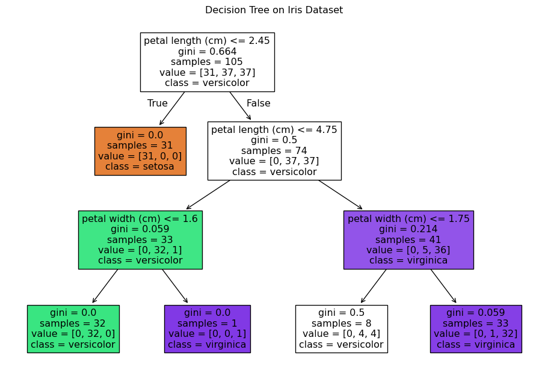
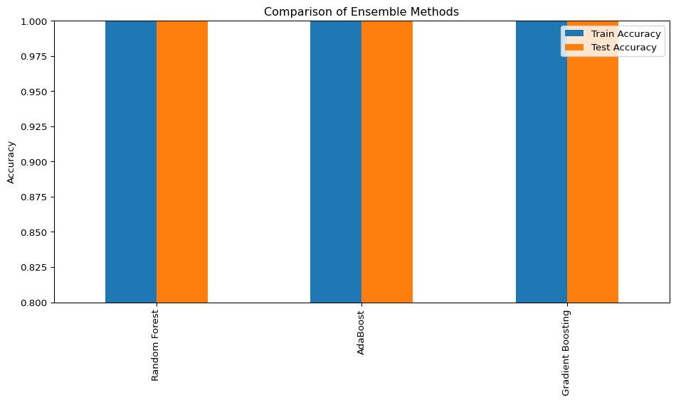

Decision trees are versatile machine learning models that can handle both classification and regression tasks. They’re powerful tools for inductive inference and particularly useful for approximating discrete-valued target functions.
7.1.1 Key Features
Robust to Noisy Data: Handle imperfections in data, including noise and missing values
Complex Datasets: Capable of fitting complex datasets and representing disjunctive expressions
Interpretable: Trees model decisions through a series of “if/else” questions, providing clear decision-making processes
7.1.2 Core Concepts
Decision trees operate by recursively partitioning the feature space based on the values of input features. At each node:
Feature Selection: Choose the most informative feature to split on
Splitting Criterion: Determine the optimal threshold or condition for the split
Recursive Partitioning: Continue splitting until stopping criteria are met
The algorithm aims to create homogeneous subsets with respect to the target variable, maximizing information gain at each step.
7.1.3 Decision Boundaries
Decision trees create piecewise constant decision boundaries that are parallel to the feature axes. This characteristic leads to:
Rectangular Partitioning: Each leaf represents a rectangular region in the feature space
Orthogonal Boundaries: Decision boundaries are always perpendicular to feature axes
Staircase Effect: Complex functions are approximated using axis-parallel rectangles
import numpy as npimport matplotlib.pyplot as pltfrom sklearn.datasets import load_irisfrom sklearn.tree import DecisionTreeClassifier, plot_treefrom sklearn.model_selection import train_test_split# Load datasetiris = load_iris()X, y = iris.data, iris.target# Split dataX_train, X_test, y_train, y_test = train_test_split(X, y, test_size=0.3, random_state=42)# Create and train decision treeclf = DecisionTreeClassifier(max_depth=3, random_state=42)clf.fit(X_train, y_train)# Visualize decision treeplt.figure(figsize=(12, 8))plot_tree(clf, filled=True, feature_names=iris.feature_names, class_names=iris.target_names)plt.title("Decision Tree on Iris Dataset")plt.show()# Evaluate performancetrain_score = clf.score(X_train, y_train)test_score = clf.score(X_test, y_test)print(f"Training accuracy: {train_score:.3f}")print(f"Testing accuracy: {test_score:.3f}")

Training accuracy: 0.952
Testing accuracy: 1.000
7.1.4 Representation
Decision trees represent a disjunction (OR) of conjunctions (AND) of constraints on attribute values:
Each path from root to leaf represents a conjunction (AND) of tests on instance attributes
The entire tree is a disjunction (OR) of these conjunctions
Each leaf node represents a classification outcome
7.1.5 When to Use Decision Trees
Attribute-Value Pair Representation: Instances are represented as attribute-value pairs
Discrete Output: Target function has discrete output values (classification tasks)
Disjunctive Descriptions: Need to represent logical ORs
Noisy Data: Training data contains errors or missing values
7.1.6 Classification Process
Trees classify instances by sorting them from root to leaf: - Each node tests an attribute - Each branch corresponds to a possible attribute value - Each leaf assigns a class label
7.1.7 Algorithmic Approaches
Several algorithms exist for constructing decision trees:
ID3 (Iterative Dichotomiser 3): Uses entropy and information gain
C4.5: Extends ID3 by handling continuous attributes and missing values
CART (Classification and Regression Trees): Uses Gini impurity for classification
CART (Classification and Regression Trees) is one of the most popular decision tree algorithms:
Start with all data at the root node
For each feature, find the best split that minimizes impurity
Split the data based on the best feature and threshold
Recursively apply steps 2-3 to the child nodes
Stop when a stopping criterion is met (e.g., max depth, min samples)
7.1.9 Training a Decision Tree
The training process involves finding the best set of questions (splits) to divide the data:
class Leaf:def__init__(self, value):self.value = valueclass Node:def__init__(self, attribute):self.attribute = attributeself.branches = {}def add_branch(self, value, subtree):self.branches[value] = subtreedef basic_decision_tree_algorithm(examples, target_attribute, attributes):""" Basic implementation of a decision tree algorithm """# If all examples have the same value for the target attribute, return a leaf nodeiflen(set(ex[target_attribute] for ex in examples)) ==1:return Leaf(examples[0][target_attribute])# If no attributes are left, return a leaf node with the majority valueifnot attributes: majority_value =max(set(ex[target_attribute] for ex in examples), key=lambda val: sum(ex[target_attribute] == val for ex in examples))return Leaf(majority_value)# Choose the best attribute to split on (placeholder for actual selection logic) best_attribute = attributes[0] # Replace with actual logic to select the best attribute# Create a new decision tree node tree = Node(best_attribute)# Get unique values for the best attribute unique_values =set(ex[best_attribute] for ex in examples)for value in unique_values:# Create a subset of examples where the best attribute equals the current value subset = [ex for ex in examples if ex[best_attribute] == value]ifnot subset:# If the subset is empty, add a leaf with the majority value majority_value =max(set(ex[target_attribute] for ex in examples), key=lambda val: sum(ex[target_attribute] == val for ex in examples)) tree.add_branch(value, Leaf(majority_value))else:# Recursively build the subtree subtree = basic_decision_tree_algorithm(subset, target_attribute, [attr for attr in attributes if attr != best_attribute]) tree.add_branch(value, subtree)return tree
7.1.9.1 Impurity Measures
To decide the best feature to split on, decision trees use impurity measures:
Gini Index: Measures the likelihood of misclassifying a randomly selected instance
Entropy: Measures disorder or uncertainty in the dataset
Misclassification Error: Proportion of misclassified instances
7.1.9.1.1 Entropy
Entropy quantifies the uncertainty or randomness in a set of examples:
\(H(S) = -\sum_{i=1}^{c} p_i \log_2(p_i)\)
Where: - \(S\) is the dataset - \(c\) is the number of classes - \(p_i\) is the proportion of examples in class \(i\)
7.1.9.1.2 Information Gain
Information gain measures the reduction in entropy after splitting on an attribute:
\(IG(S, A) = H(S) - \sum_{v \in Values(A)} \frac{|S_v|}{|S|} H(S_v)\)
Where: - \(A\) is the attribute - \(S_v\) is the subset of \(S\) for which attribute \(A\) has value \(v\)
7.1.9.1.3 Gini Impurity
Gini impurity measures the probability of incorrectly classifying a randomly chosen element if it were randomly labeled according to the class distribution in the subset:
Ensemble methods address the fundamental bias-variance tradeoff:
Bias: Error from incorrect assumptions in the learning algorithm
Variance: Error from sensitivity to small fluctuations in the training set
Total Error = Bias² + Variance + Irreducible Error
Different ensemble techniques target different components of this error: - Bagging primarily reduces variance - Boosting reduces both bias and variance
Model Test Accuracy
0 Decision Tree 1.0
1 Random Forest 1.0
2 Gradient Boosting 1.0
7.2.3 Types of Ensemble Learning
Bagging (Bootstrap Aggregating):
Builds independent predictors and combines them
Models trained on bootstrapped datasets (random samples with replacement)
Reduces variance, effective against overfitting
Example: Random Forest
Boosting:
Builds predictors sequentially, each correcting errors of previous models
Assigns higher weights to misclassified data points
Reduces both bias and variance
Examples: AdaBoost, Gradient Boosting, XGBoost
Stacking:
Combines multiple models using another model (meta-learner)
Base models make predictions independently
Meta-learner learns how to combine these predictions optimally
Examples: Stacked Generalization, Blending
Voting:
Simple aggregation of predictions from multiple models
Hard Voting: Majority vote for classification
Soft Voting: Weighted average of probabilities
Works best with diverse, uncorrelated models
7.2.4 Theoretical Foundations
The power of ensemble methods is backed by mathematical proofs:
Condorcet’s Jury Theorem: As the number of independent, better-than-random models increases, the probability of a correct majority vote approaches 1
Bias-Variance Decomposition: Ensembles can reduce variance without increasing bias
No Free Lunch Theorem: No single model is optimal for all problems, but ensembles can adapt to different problem structures
7.3 Random Forests
Random Forest is an ensemble method combining multiple decision trees through bagging.
7.3.1 Core Concepts
Random Forests extend the bagging idea with additional randomness:
Bootstrap Sampling: Each tree is trained on a random subset of data
Feature Randomization: At each node, consider only a random subset of features
Ensemble Aggregation: Combine predictions through voting (classification) or averaging (regression)
7.3.2 Random Forest Algorithm
Create n_estimators bootstrap samples from the original dataset
For each sample, grow a decision tree with the following modification:
At each node, randomly select m features (typically m ≈ sqrt(total features))
Split on the best feature among the m features
Predict new data by aggregating predictions from all trees
# Train a Random Forest with different parametersrf = RandomForestClassifier( n_estimators=100, max_depth=4, min_samples_split=10, random_state=42)rf.fit(X_train, y_train)# Get feature importancesimportances = pd.DataFrame({'Feature': iris.feature_names,'Importance': rf.feature_importances_}).sort_values('Importance', ascending=False)# Plot feature importancesplt.figure(figsize=(10, 6))plt.barh(importances['Feature'], importances['Importance'])plt.xlabel('Importance')plt.title('Feature Importances from Random Forest')plt.tight_layout()plt.show()print(importances)
Train Accuracy Test Accuracy
Random Forest 1.0 1.0
AdaBoost 1.0 1.0
Gradient Boosting 1.0 1.0
<Figure size 960x576 with 0 Axes>

7.5.1 Bagging vs. Boosting
7.5.1.1 Bagging (Random Forest)
Goal: Reduce variance (overfitting)
Training: Parallel (trees are independent)
Weighting: Equal weight for all models
Bias-Variance: Primarily reduces variance
Robustness: Less prone to overfitting
Speed: Can be parallelized easily
7.5.1.2 Boosting (Gradient Boosting)
Goal: Reduce bias and variance
Training: Sequential (each tree depends on previous trees)
Weighting: Different weights for different models
Bias-Variance: Reduces both bias and variance
Robustness: More prone to overfitting
Speed: Generally slower due to sequential nature
7.5.2 Stacking
Stacking combines multiple models using a meta-learner:
Train base models on the original dataset
Generate predictions from each base model
Use these predictions as features to train a meta-model
Final prediction is given by the meta-model
7.5.3 Choosing the Right Ensemble Method
The choice depends on the problem characteristics:
Random Forest: Good default for most problems, especially with limited data
Gradient Boosting: When maximum performance is needed and you can tune hyperparameters
AdaBoost: Simple boosting algorithm, good for weak learners
Stacking: When you have diverse models and computational resources
Voting: Simple ensemble when you already have several good models
7.5.4 Practical Considerations
When implementing ensemble methods:
Computational Resources: Boosting methods are generally more resource-intensive
Model Complexity: Simpler models may be preferred for production
Interpretability Requirements: Random forests offer better interpretability than boosting
Dataset Size: For small datasets, random forests may be more appropriate
Noise Level: For noisy data, bagging methods are more robust
7.6 Conclusion
Decision Trees provide interpretable models for both classification and regression
Ensemble methods like Random Forest and Gradient Boosting improve upon Decision Trees by combining multiple models
Random Forest reduces variance through bagging and random feature selection
Gradient Boosting reduces both bias and variance through sequential model building
Each method has strengths and weaknesses depending on the specific problem and dataset
7.6.1 Key Takeaways
No Free Lunch: No single algorithm is best for all problems
Bias-Variance Tradeoff: Different ensemble methods address different aspects of model error
Hyperparameter Tuning: Proper tuning is crucial for optimal performance
Interpretability vs. Performance: More complex ensembles usually offer better performance at the cost of interpretability
Computational Considerations: Training time and resource requirements vary significantly between methods
# Final comprehensive example: train models on different datasets and comparefrom sklearn.datasets import load_breast_cancer, load_winefrom sklearn.preprocessing import StandardScalerdatasets = {'Iris': load_iris(),'Breast Cancer': load_breast_cancer(),'Wine': load_wine()}results = []for name, dataset in datasets.items(): X, y = dataset.data, dataset.target# Scale features scaler = StandardScaler() X = scaler.fit_transform(X)# Split data X_train, X_test, y_train, y_test = train_test_split(X, y, test_size=0.3, random_state=42)# Train models dt = DecisionTreeClassifier(max_depth=4, random_state=42) rf = RandomForestClassifier(n_estimators=100, max_depth=4, random_state=42) gb = GradientBoostingClassifier(n_estimators=100, max_depth=3, random_state=42) models = {'Decision Tree': dt, 'Random Forest': rf, 'Gradient Boosting': gb}# Evaluatefor model_name, model in models.items(): model.fit(X_train, y_train) train_acc = model.score(X_train, y_train) test_acc = model.score(X_test, y_test) results.append({'Dataset': name,'Model': model_name,'Train Accuracy': train_acc,'Test Accuracy': test_acc })# Create DataFrame with resultsfinal_results = pd.DataFrame(results)print(final_results.pivot_table(index='Dataset', columns='Model', values='Test Accuracy'))
Model Decision Tree Gradient Boosting Random Forest
Dataset
Breast Cancer 0.953216 0.959064 0.97076
Iris 1.000000 1.000000 1.00000
Wine 0.962963 0.907407 1.00000
7.6.2 Further Research Directions
Explainable AI: Methods to interpret complex ensemble models
Automatic Machine Learning (AutoML): Automating the selection and tuning of ensemble methods
Deep Forest: Combining deep learning concepts with random forests
Online Learning: Adapting ensemble methods for streaming data
Imbalanced Learning: Specialized ensemble techniques for imbalanced datasets